Idee e metodo su marketing, dati, sales e strategia — senza fronzoli, dritti al punto.
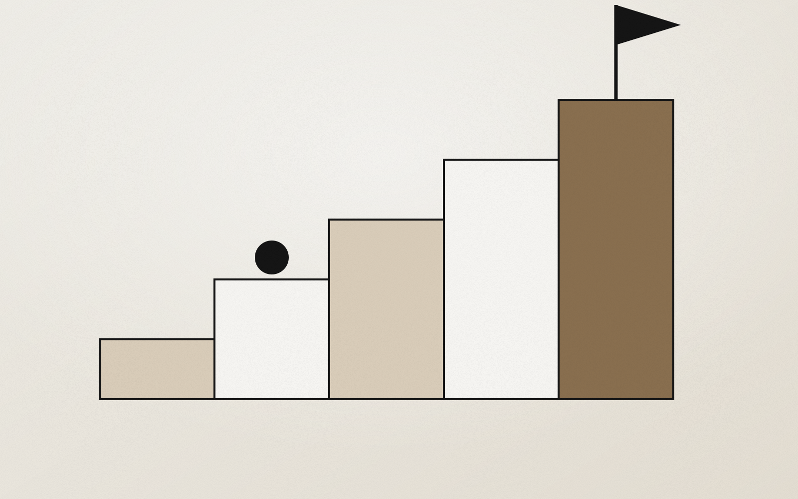
Perché una consulenza strategica aiuta a dare priorità, allineare le funzioni e far crescere l'azienda con metodo, invece di rincorrere ogni opportunità.
Come usare gli articoli SEO per rafforzare il posizionamento del brand e costruire autorevolezza, attirando ricerche qua
Leggi →Cos’è un audit marketing, cosa analizza e quando conviene farlo per individuare i colli di bottiglia e definire le prior
Leggi →Come usare il business development e una sales strategy chiara per aprire nuove opportunità commerciali e far crescere u
Leggi →Come capire se il marketing della tua azienda sta funzionando davvero e costruire un sistema più chiaro, misurabile e so
Leggi →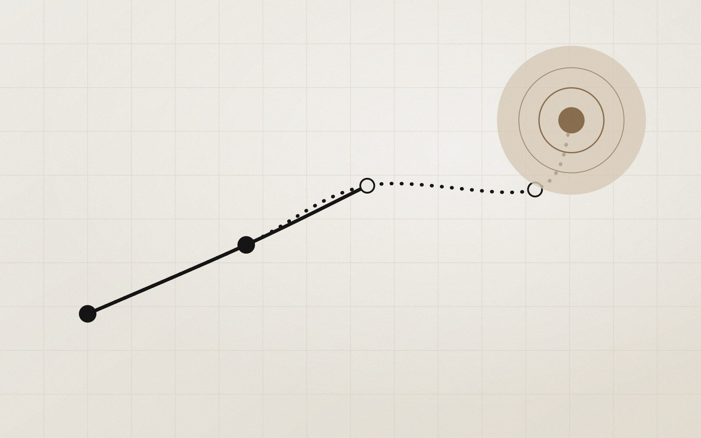
Cosa deve contenere un piano di crescita aziendale e come costruire una roadmap strategica che trasformi gli obiettivi i
Leggi →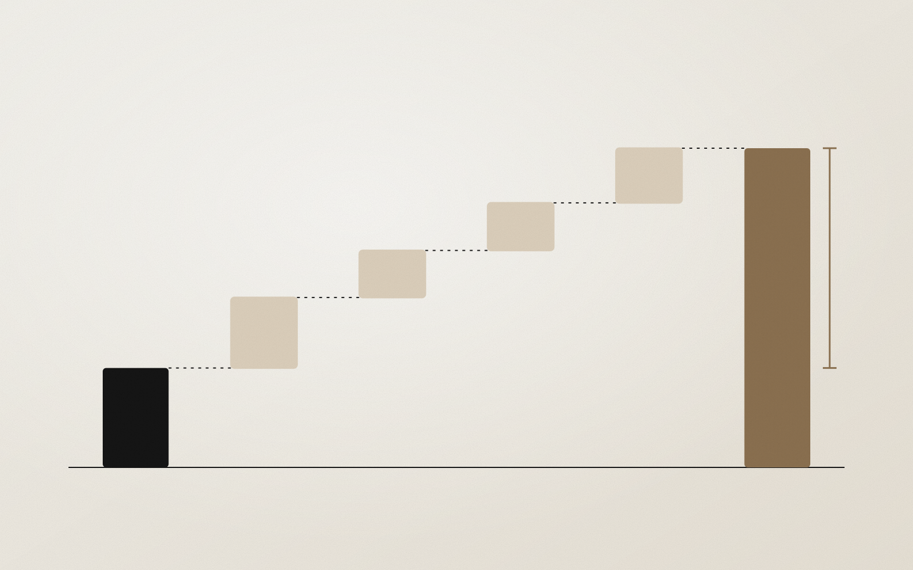
Guida pratica per impostare un controllo di gestione che aiuti il management a leggere margini, costi e priorità e a dec
Leggi →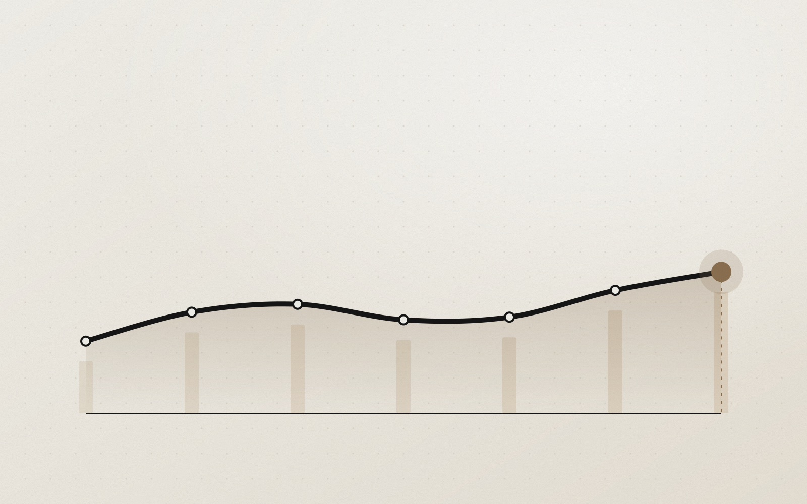
Quali KPI deve guardare un imprenditore ogni mese per decidere meglio, scegliendo gli indicatori che contano ed evitando
Leggi →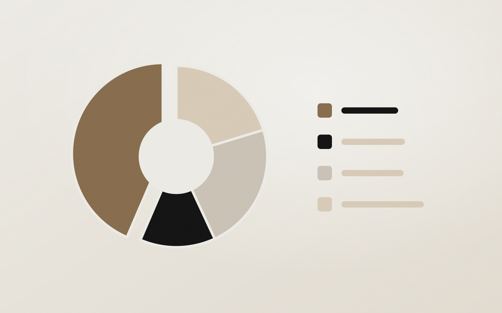
Come leggere numeri e marginalità in modo utile per prendere decisioni basate sui dati invece che a sensazione.
Leggi →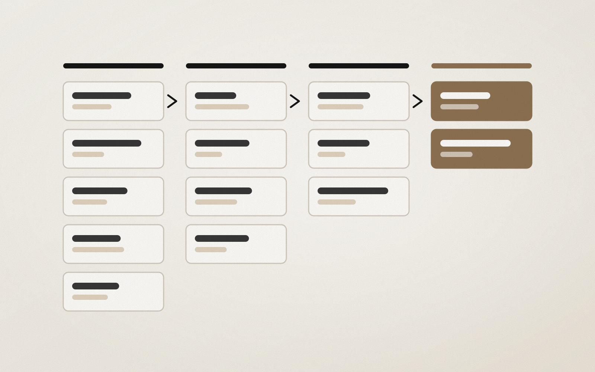
Come migliorare vendite e tasso di conversione in B2B lavorando su qualità della domanda, pipeline e processo commercial
Leggi →Guida pratica per scrivere articoli SEO che attraggono lettori in target e portano traffico qualificato al sito.
Leggi →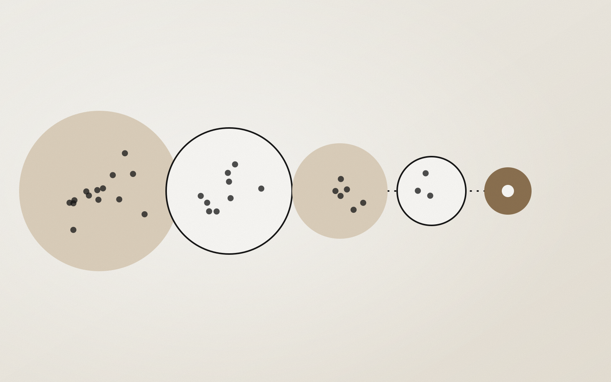
Come strutturare un processo di vendita B2B più chiaro, con stage definiti ed exit criteria, per chiudere più trattative
Leggi →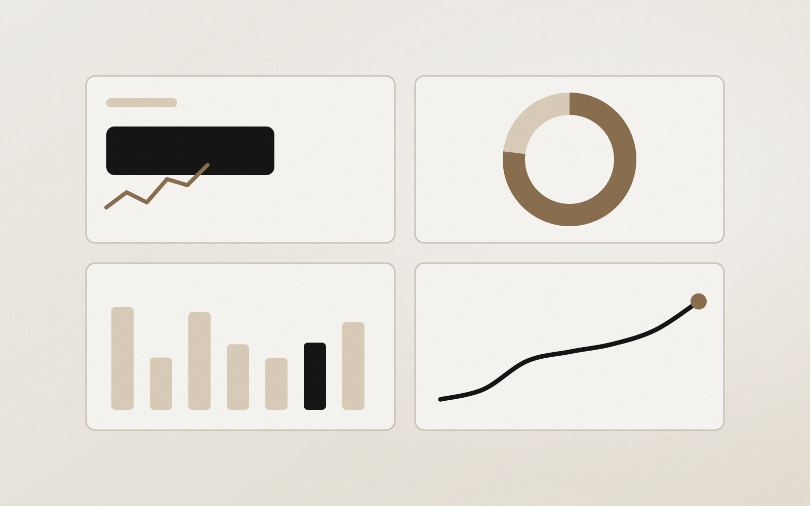
Come una consulenza data-driven trasforma KPI, dashboard e report in decisioni migliori per il management.
Leggi →Come sviluppare partnership strategiche e business development per costruire una crescita aziendale più solida e sosteni
Leggi →Come costruire una pipeline commerciale leggibile per migliorare conversione e processo di vendita, con una consulenza s
Leggi →Come scegliere le priorità strategiche di un’azienda per crescere con più direzione, allineando funzioni, obiettivi e ri
Leggi →A cosa serve il controllo di gestione e come aiuta a leggere margini, costi e priorità con più lucidità nelle decisioni.
Leggi →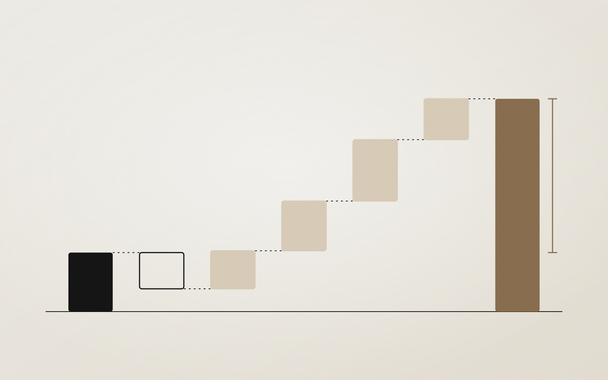
Come impostare il controllo di gestione in una PMI in crescita: da dove iniziare per evitare dispersione e leggere megli
Leggi →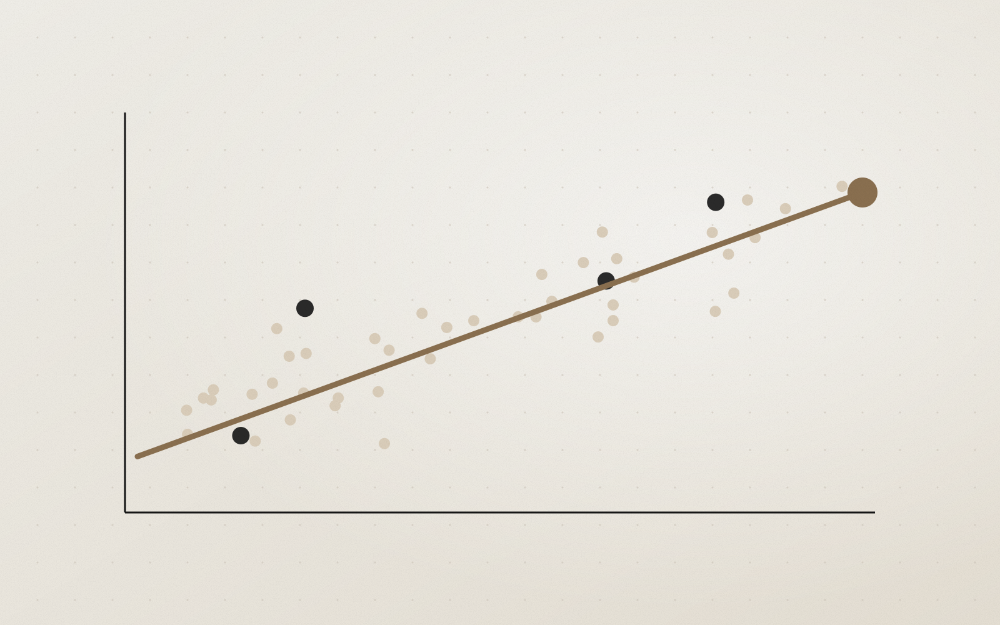
Cosa deve contenere un report mensile di marketing e vendite per rendere la crescita più leggibile, misurabile e sosteni
Leggi →Cosa deve contenere una dashboard di marketing e vendite e come progettare KPI utili per decidere meglio.
Leggi →Perché il controllo di gestione aiuta a tenere insieme margini, struttura dei costi e sostenibilità della crescita.
Leggi →Come costruire un piano editoriale SEO che sostenga la crescita organica, con contenuti pianificati su ricerche reali.
Leggi →Come la redazione di articoli SEO migliora visibilità, autorevolezza e qualità del traffico per le aziende che vogliono
Leggi →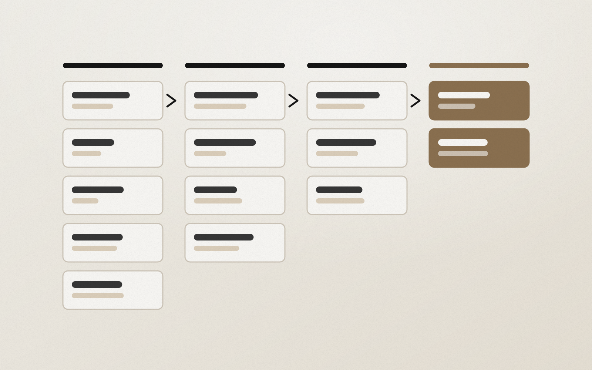
Come usare il sales enablement per dotare il team commerciale di contenuti, strumenti e processi che rendono la vendita
Leggi →Come funziona un servizio di redazione articoli per blog aziendali B2B e perché serve per crescere in modo organico.
Leggi →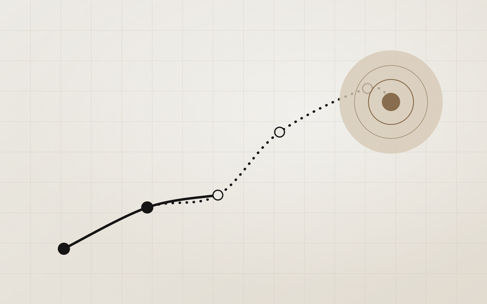
Come allineare marketing, sales e dati agli obiettivi di business con una strategia che collega le funzioni alla crescit
Leggi →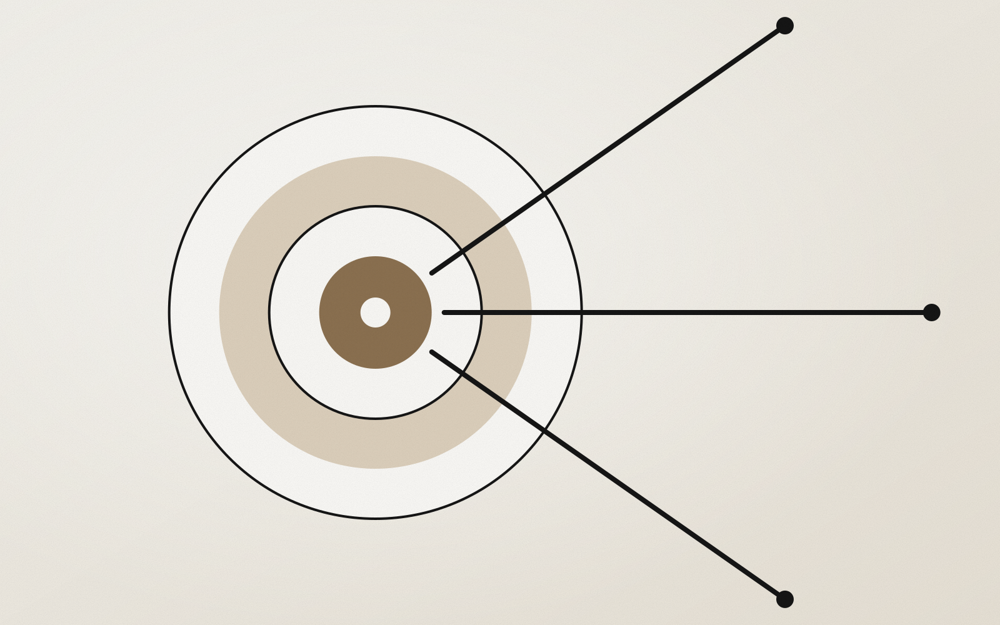
Come costruire una strategia go-to-market per entrare in un nuovo mercato o canale in modo selettivo e sostenibile.
Leggi →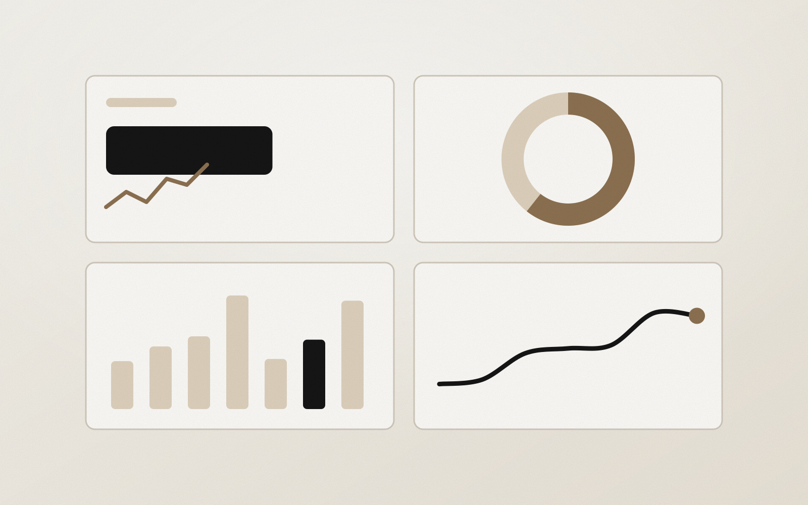
Come impostare tracking, attribuzione e reportistica affidabili per capire da dove arrivano davvero i clienti.
Leggi →Una mail occasionale, solo quando ho qualcosa di utile da dire.